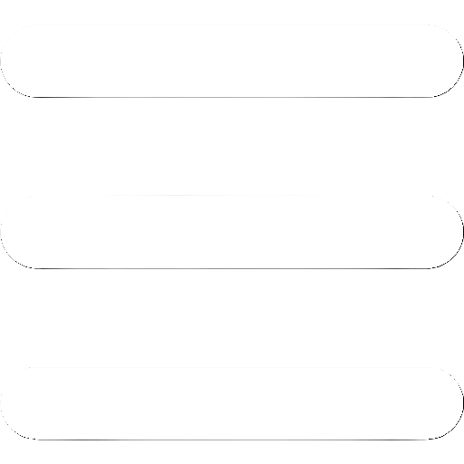

主頁
佇列
設定
關於
oldfish影片下載器
下載
下載
設定
通知設定
啟用下載完成通知(實驗性)
播放清單下載完成的通知時機：
整個播放清單下載完成時
每下載完一部影片時
下載設定
在檔名後方加上影片格式
同時下載影片數量上限（建議 3~5）：
自訂下載路徑：
瀏覽
外觀設定
深色
淺色
主題色調
#2ECC71
#2ECC71
開發者選項
啟用 Dev Command（開發/測試用）
重設為預設值
oldfish影片下載器
版本：
—
發布日期：2025.01.20
作者：老魚oldfish
前往 GitHub 專案頁面
載入中...
確定
取消
確定
啟用 Dev Command
此功能為開發者專用的偵錯模式
除非您了解此功能的用途，否則不建議開啟
不要再顯示此提醒
取消
確定啟用
偵測到已下載內容
全選
取消下載
繼續
載入中...
畫質
請選擇畫質
影片格式
請選擇格式
取消
下載
播放清單
共 0 部影片
×
全選
套用最高畫質/位元率
影片格式(一次套用至所有)
-請選擇影片格式-
-請選擇影片格式-
影片(mp4)
音訊(mp3)
個別選擇格式